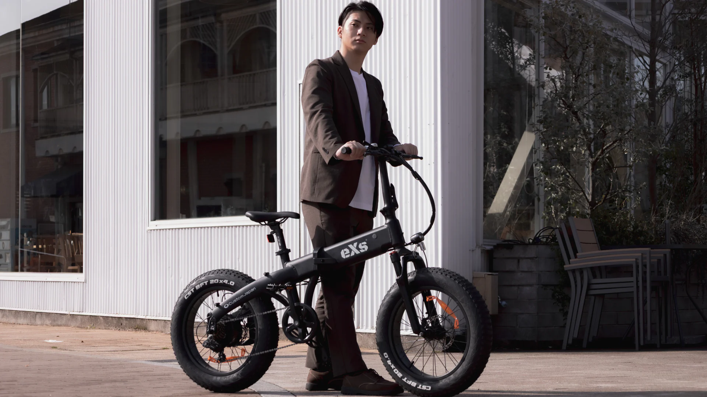
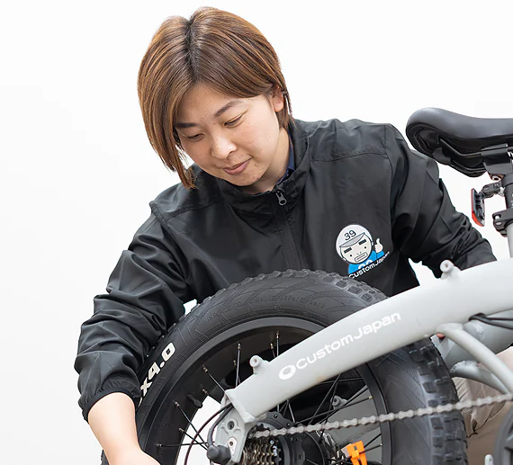
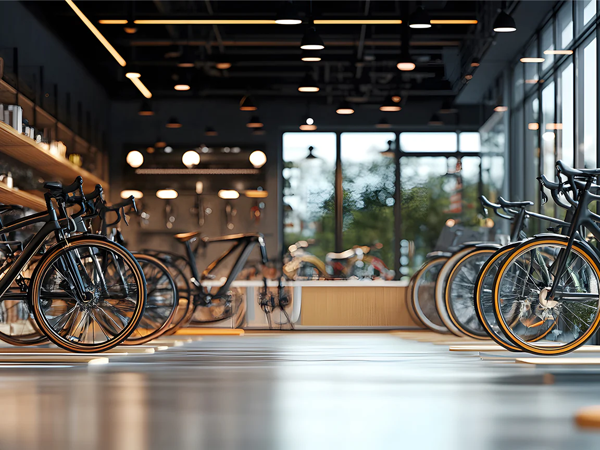

FOUNDATION
1954年創業のグループ企業「日本モーターパーツ」を基盤に、長年にわたり部品流通の現場を支えてきました。

ABOUT eXs
eXsは、ストリートカルチャーの感性と、長年のモビリティ供給で蓄積した実務知見を掛け合わせ、 日常で使い続けられる次世代モビリティを提案するブランドです。
BRAND STATEMENT
高すぎるか、使いにくいか。これまでのモビリティ市場にあった二択を、eXsは更新します。
通勤、買い物、週末移動。使うたびに負担が減り、景色が変わる体験を、デザインと機能の両面から設計しています。
私たちが目指しているのは、スペック競争ではなく、日々の移動品質を底上げすることです。
KEYWORDS
#ノル人をツクる #カスタムジャパン
FOUNDATION
1954年創業のグループ企業「日本モーターパーツ」を基盤に、長年にわたり部品流通の現場を支えてきました。
NETWORK
全国のバイク販売店・自転車販売店・自動車整備店へ供給網を展開。実運用に根ざした視点が私たちの強みです。
MISSION
蓄積されたノウハウを活かし、モビリティ市場に革新をもたらす。その実践として生まれたのがeXsです。
OUR STORY
eXsを展開するCustom Japan Co., Ltd.は、1954年創業のグループ企業「日本モーターパーツ」で培われた70年以上の部品供給ノウハウを土台にしています。
2025年、従来の50cc原付が担ってきた役割が大きく転換する中で、私たちは日常移動の次の基準として電動モビリティの普及を本格化させました。
大阪・関西万博「スマートモビリティ万博」のサプライヤー実績を通じて、実運用に耐える品質とサポート体制を磨き続けています。

